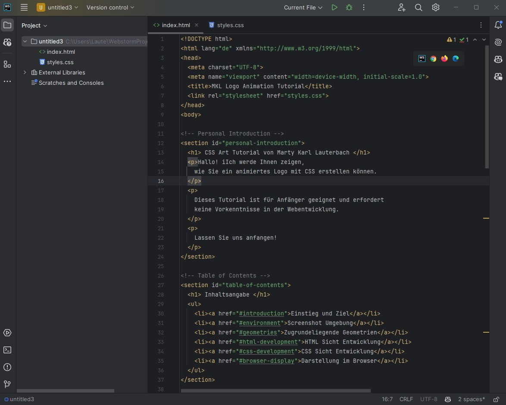

CSS Art Tutorial von mklemmingen
Hallo,
dieses Tutorial über CSS Art ist für Anfänger in CSS geeignet, und zeigt, wie
ein animiertes Logo erstellt werden kann.
Let's Begin!
Einstieg und Ziel
Auf der rechten Bildschirmseite sehen Sie, wie das Logo an Ende aussehen soll:
Es besteht aus den Buchstaben "M", "K" und "L", die sich in einer stetigen Bewegung bewegen, und in einem
bestimmten Interval wieder auf Ihre Startposition zurückkehren.
Die Buchstaben sind in einem Tintenklecks eingebettet, der sich ebenfalls bewegt, und dem ganzen eine
dynamische Note gibt, als ob das Logo versucht, seine Grenzen zu sprengen.
Das Ziel dieses Tutorials ist es, Ihnen zu zeigen, wie Sie dieses Logo mit HTML und CSS erstellen können.
Screenshot Umgebung
Wir verwenden einen Code-Editor, um unser HTML und CSS zu schreiben. Um viele Vorteile genießen zu können -
wie das Anzeigen von Fehlern, nutze Ich WebStorm. Diese IDE ist für Webentwicklung ausgelegt, und in der
Community Edition kostenlos. Es bietet den Vorteil, dass man die HTML-Datei direkt in der IDE oder in einem
Browser anschauen kann, und Veränderungen direkt visualisiert werden.
Hier ist ein Screenshot der Entwicklungsumgebung:

Zugrundeliegende Geometrien
Die Geometrien des Logos basieren auf einfachen Formen; Kreise, Rechtecke sowie interne Fonts.
Diese werden mit CSS gestaltet und animiert.
Es gibt einen Kreis, den 'ink-blob', welcher sich auf dem weißen Website-Hintergrund, aber unterhalb der
Buchstaben, befindet. Der Kreis besitzt Animationen, und zeichnet einen Schatten unter sich.
In einem linearen Verlauf über 6 sekunden dreht sich der Kreis,
in einem unendlichen Lauf deformiert sich er sich alle 3 Sekunden und alle 6 Sekunden ändert sich die Farbe des
Kreises unendlich Male von weiß #ffff zu einem dunkleren Blau #3498db.
Die Buchstaben 'M', 'K' und 'L' sind in einem Container, der sich am rechten Bildschirmrand befindet.
Die Buchstaben haben Animationen, die sie schweben lassen, ihre Farbe ändern und wie ein Schreibmaschinen-Effekt
aussehen lassen.
HTML Sicht Entwicklung
Per CSS kann nur animiert werden, wenn der CSS-Code in ein HTML-File eingebettet ist, oder das HTML-File sich
auf die CSS-Datei bezieht. Zudem muss sich der CSS-Code auf die in dem HTML bezeichneten Abschnitte
und Klassen beziehen.
Der HTML-Code für das Logo sieht wie folgt aus:
<div class="logo-container">
<div class="ink-blob"></div>
<div class="letter" id="letterM">M</div>
<div class="letter" id="letterK">K</div>
<div class="letter" id="letterL">L</div>
</div>
Wie sie sehen, gibt es einen Container mit der Klasse logo-container, der die Buchstaben und den
Tintenklecks enthält. Die Buchstaben sind div-Elemente mit der Klasse letter und
einer eindeutigen ID für jeden Buchstaben. Der Tintenklecks ist ebenfalls ein div-Element mit der
Klasse ink-blob.
Der HTML-Code ist einfach und übersichtlich, was es einfach macht, die Elemente zu stylen und zu animieren.
Der Css-Code bezieht sich auf diese Klassen und IDs, um die Animationen zuzuweisen.
CSS Sicht Entwicklung
Hier ist eine Schritt-für-Schritt-Anleitung auf Deutsch, wie dieser CSS-Code funktioniert:
Zuerst klären wir, was animations, keyframes und transitionen sind
Erklärung von Animations
Animationen:
Animationen ermöglichen es, Elemente über einen bestimmten Zeitraum zu bewegen, zu verändern oder zu verändern.
Zum Beispiel:
.element {
animation: example 5s infinite;}
Diese Animation bewegt ein Element über 5 Sekunden und wiederholt sie unendlich.
Der Name 'example' bezieht sich auf die Keyframes, die die Animation definieren.
Erklärung von Keyframes und Transitionen
Keyframes:
Keyframes definieren die Zustände einer Animation zu bestimmten Zeitpunkten.
Zum Beispiel:
@keyframes example {
0% { transform: translateX(0); }
100% { transform: translateX(100px); }}
Diese Keyframes verschieben ein Element von 0 nach 100px
über die Dauer der Animation.
Transitionen:
Transitionen ermöglichen sanfte Übergänge zwischen
verschiedenen Zuständen eines Elements. Zum Beispiel:
.element {
transition: transform 0.3s;.element:hover {
transform: scale(1.2);}
Diese Transition skaliert ein Element sanft, wenn es überfahren wird.
Schritt-für-Schritt-Anleitung
-
Styling der Buchstaben:
.letter hat eine absolute Positionierung (position: absolute),
eine große Schriftgröße (font-size: 50px),
und mehrere Animationen (animation: float 3s infinite,
colorChange 6s infinite, typing 3s steps(10) infinite).
-
Keyframes für Typing-Effekt:
@keyframes typing definiert die Breite der Buchstaben.
Bei 0 % und 100 % ist die Breite 0, bei 50% 100%.
-
Hover-Effekt für Buchstaben:
.letter:hover skaliert die Buchstaben bei Hover (transform: scale(1.2))
und fügt ein Übergangseffekt hinzu (transition: transform 0.3s).
-
Spezifische Animationen für Buchstaben:
#letterM, #letterK, und #letterL
haben jeweils eigene Float-Animationen
(animation-name: floatM,
floatK, floatL).
-
Keyframes für Float-Animationen:
@keyframes floatM, floatK, und floatL
definieren die Bewegungen der Buchstaben M, K und L.

-
Keyframes für Farbwechsel:
@keyframes colorChange ändert die Farbe der Buchstaben.
Bei 0 % und 100 % ist die Farbe #3498db, bei 50% #e74c3c.
-
Styling des Tintenflecks:
.ink-blob ist ein absolut positioniertes Element (position: absolute),
das am unteren Rand zentriert ist (bottom: 0, left: 50%).
Es hat eine runde Form (border-radius: 50%) und mehrere Animationen
(animation: swirl 6s infinite linear, deform 3s infinite, blobColorChange 6s infinite).
-
Keyframes für Tintenfleck-Animationen:
@keyframes swirl dreht den Tintenfleck.
@keyframes deform ändert die Form des Tintenflecks
@keyframes blobColorChange ändert die Hintergrundfarbe des Tintenflecks.
Ausgeschrieben in codeform bedeutet das:
-
@keyframes typing: Definiert die Breite der Buchstaben.
@keyframes typing {
0%, 100% { width: 0; }
50% { width: 100%; }
}
-
@keyframes floatM: Definiert die animation die "schwebe" animation des M Buchstabens.
@keyframes floatM {
0%, 100% { top: 50px; left: 50px; }
33% { top: 20px; left: 100px; }
66% { top: 100px; left: 20px; }
}
-
@keyframes floatK: Definiert die animation die "schwebe" animation des K Buchstabens.
@keyframes floatK {
0%, 100% { top: 50px; left: 100px; }
33% { top: 100px; left: 50px; }
66% { top: 20px; left: 100px; }
}
-
@keyframes floatL: Definiert die animation die "schwebe" animation des L Buchstabens.
@keyframes floatL {
0%, 100% { top: 100px; left: 50px; }
33% { top: 50px; left: 20px; }
66% { top: 100px; left: 100px; }
}
-
@keyframes colorChange: Ändert die Farbe der Buchstaben.
@keyframes colorChange {
0%, 100% { color: #3498db; }
50% { color: #e74c3c; }
}
-
@keyframes blobColorChange: Ändert die Farbe des Ink-Blobs (Kreises)
@keyframes blobColorChange {
0%, 100% { background-color: #ffffff; }
50% { background-color: #3498db; }
}
-
@keyframes swirl: Rotiert den Kreis.
@keyframes swirl {
0% { transform: translateX(-50%) rotate(0deg); }
100% { transform: translateX(-50%) rotate(360deg); }
}
-
@keyframes deform: Ändert die Form des Kreises.
@keyframes deform {
0%, 100% { border-radius: 50%; }
25% { border-radius: 40% 60% 60% 40%; }
50% { border-radius: 60% 40% 40% 60%; }
75% { border-radius: 50% 50% 60% 40%; }
}
Darstellung im Browser
Verfolgen Sie jetzt für eine Weile jeden Baustein des Logos auf der rechten Seite des
Bildschirms, den Sie durch die Schritt-für-Schritt-Anleitung kennengelernt haben, und versuchen Sie,
die Animationen nachzuvollziehen.
Dabei ist es wichtig sich die Attribute der Bausteine zu jedem Zeitpunkt klarzumachen, und dann zu
schauen, welche sich gerade verändern.
Entwicklungsprozess
Erste Iteration:
Zweite Iteration:
Dritte Iteration:
Vierte Iteration:

CSS des Logos - komplett:
/* Setting up the logo container */
.logo-container {
position: fixed; /* Setting fixed positioning */
width: 200px; /* Setting width */
height: 200px; /* Setting height */
}
/* Styling the letters */
.letter {
position: absolute; /* Setting absolute positioning */
font-size: 50px; /* Setting font size */
font-weight: bold; /* Setting font weight */
animation: /* Adding multiple animations */
float 3s infinite,
colorChange 6s infinite,
typing 3s steps(10) infinite;
overflow: hidden; /* Hiding overflow */
white-space: nowrap; /* Preventing text wrapping */
border-right: 2px solid; /* Adding right border */
text-shadow: /* Adding text shadow */
2px 2px 5px rgba(0, 0, 0, 0.3),
0 0 10px rgba(255, 255, 255, 0.5);
}
/* Defining keyframes for typing effect */
@keyframes typing {
0%, 100% { width: 0; } /* Starting and ending width */
50% { width: 100%; } /* Midway width */
}
/* Adding hover effect to letters */
.letter:hover {
transform: scale(1.2); /* Scaling up on hover */
transition: transform 0.3s; /* Adding transition effect */
}
/* Assigning specific animations to each letter */
#letterM {
animation-name: floatM; /* Using floatM animation */
}
#letterK {
animation-name: floatK; /* Using floatK animation */
}
#letterL {
animation-name: floatL; /* Using floatL animation */
}
/* Defining keyframes for floating animation of letter M */
@keyframes floatM {
0%, 100% { top: 50px; left: 50px; } /* Starting and ending position */
33% { top: 20px; left: 100px; } /* Intermediate position */
66% { top: 100px; left: 20px; } /* Intermediate position */
}
/* Defining keyframes for floating animation of letter K */
@keyframes floatK {
0%, 100% { top: 50px; left: 100px; } /* Starting and ending position */
33% { top: 100px; left: 50px; } /* Intermediate position */
66% { top: 20px; left: 100px; } /* Intermediate position */
}
/* Defining keyframes for floating animation of letter L */
@keyframes floatL {
0%, 100% { top: 100px; left: 50px; } /* Starting and ending position */
33% { top: 50px; left: 20px; } /* Intermediate position */
66% { top: 100px; left: 100px; } /* Intermediate position */
}
/* Defining keyframes for color change animation */
@keyframes colorChange {
0%, 100% { color: #3498db; } /* Starting and ending color */
50% { color: #e74c3c; } /* Midway color */
}
/* Styling the ink blob */
.ink-blob {
position: absolute; /* Setting absolute positioning */
bottom: 0; /* Positioning at the bottom */
left: 50%; /* Centering horizontally */
width: 200px; /* Setting width */
height: 200px; /* Setting height */
background-color: #ffffff; /* Setting background color */
border-radius: 50%; /* Making it circular */
transform: translateX(-50%); /* Centering horizontally */
animation: /* Adding multiple animations */
swirl 6s infinite linear,
deform 3s infinite,
blobColorChange 6s infinite;
box-shadow: 0 0 15px rgba(0, 0, 0, 0.2); /* Adding shadow */
}
/* Defining keyframes for blob color change */
@keyframes blobColorChange {
0%, 100% { background-color: #ffffff; } /* Starting and ending color */
50% { background-color: #3498db; } /* Midway color */
}
/* Defining keyframes for swirling animation */
@keyframes swirl {
0% { transform: translateX(-50%) rotate(0deg); } /* Starting position */
100% { transform: translateX(-50%) rotate(360deg); } /* Ending position */
}
/* Defining keyframes for deforming animation */
@keyframes deform {
0%, 100% { border-radius: 50%; } /* Starting and ending shape */
25% { border-radius: 40% 60% 60% 40%; } /* Intermediate shape */
50% { border-radius: 60% 40% 40% 60%; } /* Intermediate shape */
75% { border-radius: 50% 50% 60% 40%; } /* Intermediate shape */
}